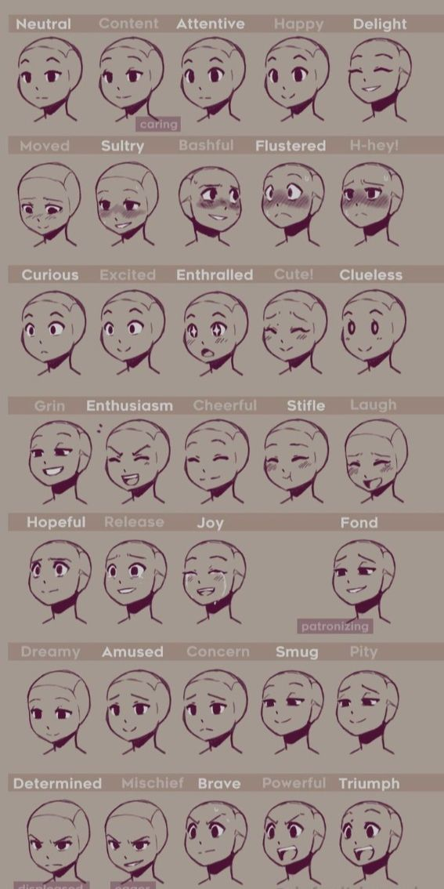
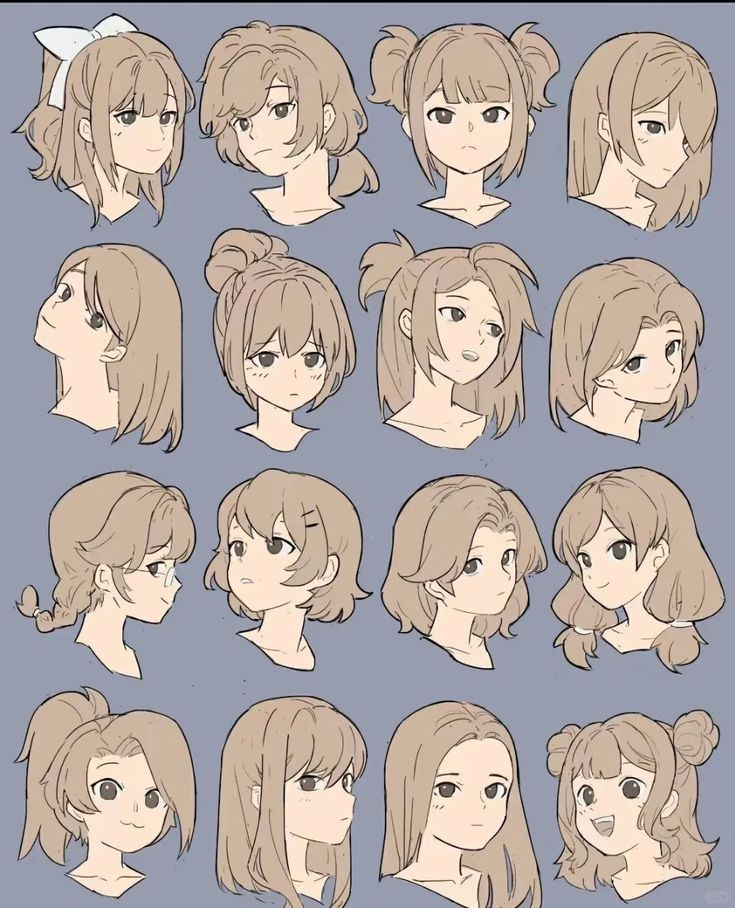
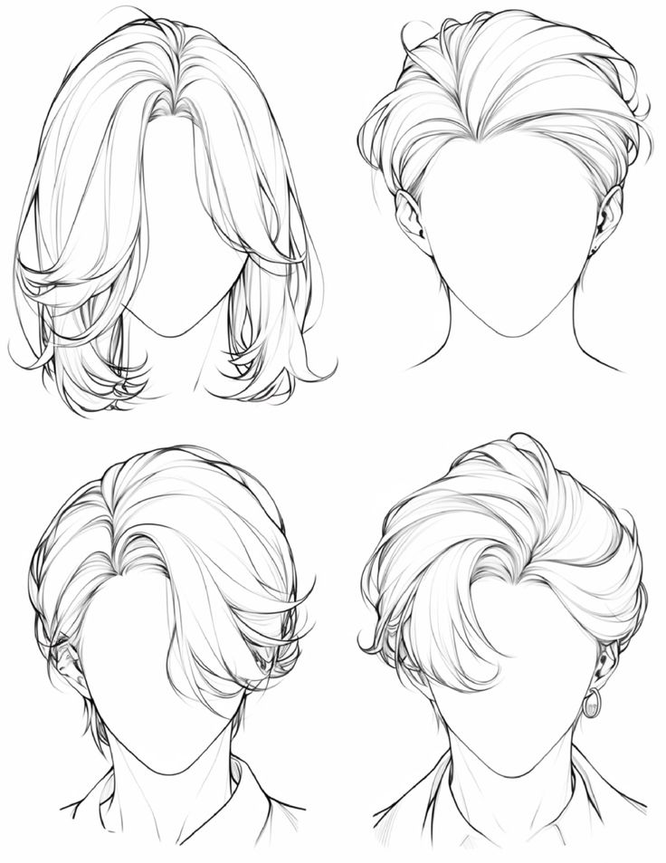
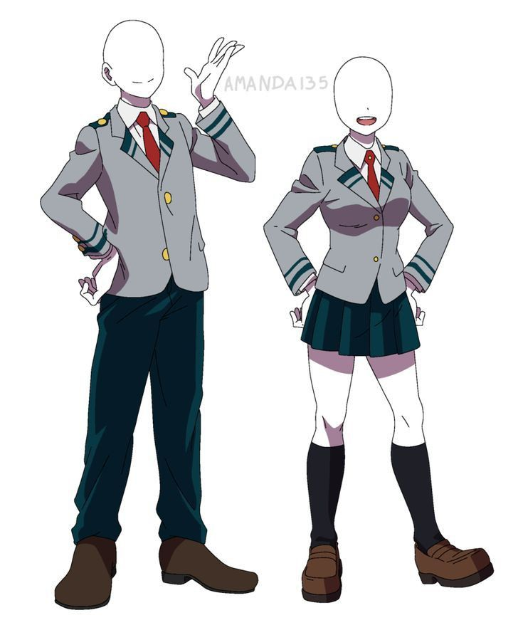
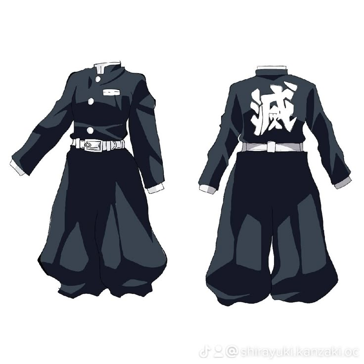
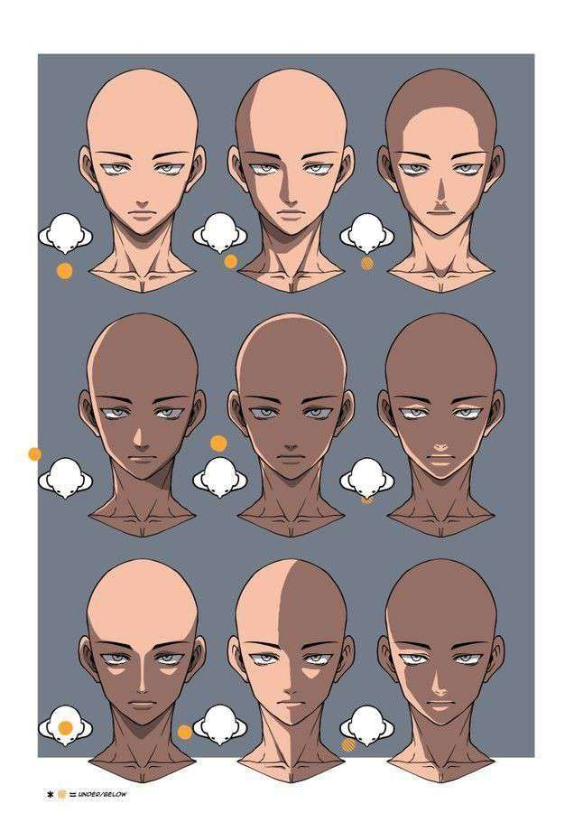

Designing Anime Characters
Facial Features
Anime characters are widely known for their expressive eyes and simplified facial features. Artists often try to exaggerate their eyes to display emotion and personality in their characters. Eyes are often large and have more details to exhibit emotion. Depending on your desire, facial expression depends mostly on your eye exaggeration, but also on the placement of the mouth for the expression and style.

Image by pandassketches (Pinterest)
Hairstyles
A major role in character identity is hairstyles; it isn't just decoration. They come in many unique shapes and bold styles to help make characters recognizable. The wild spiky hair is normally for energetic or rebellious characters, while long and straight hair is for calm or elegant characters. While the messy, uneven cut hair is for laid-back characters. You can cover their eyes with the hair to be mysterious or soft and round shapes for the hair to give off a kind and gentle. Flowing hair can add exaggeration to the action or motion. Or simply frame the face, enhancing the face, or hiding it.

Image by NotSakurasama (Pinterest)

Image by mek0o0 (Pinterest)
Clothing
A character's clothing is important; it reflects not only personality but also setting and culture. Designs for characters can range from simple school uniforms, fantasy costumes, or even casual modern fashion or combat/ military. Depending on uniforms or casual fashion, it can reflect the role they play or their status. Good clothing for characters works with them, not against them. Gives it a good visual balance overall.

Image by lafolleenrolleur (Pinterest)

Image by ShirayukiKanzaki17 (Pinterest)
Character Personality
A strong character design shows personality through body language, facial expression, and character style. Small details from the eyes can communicate the mood and attitude of a character. Hair and clothing can also reflect a personality. The most important part is consistency, making sure everything matches as you develop a character. A calm character shouldn't have a chaotic design. The pose, clothing, and expression should all align with the personality.

Image by leyliand (Pinterest)
Image by pandassketches (Pinterest)
Color Choices
Colors are another way to help define a character's identity. Bright colors may suggest an energetic look, while darker tones may create a serious or mysterious look. If you want to set a tone for a character, you can give them a particular color; for example, red can be for passion, aggression, or energy. while black can be mystery, distant, or power.

Dark Tone example. Image by creepyheadmonster (Pinterest)

Energetic Tone example. Image by Astrs211 (Pinterest)
Original Design
Creating original characters allows artists to develop their own style and creativity. Combining ideas leads to unique and memorable designs.

Image by Michael Bryant